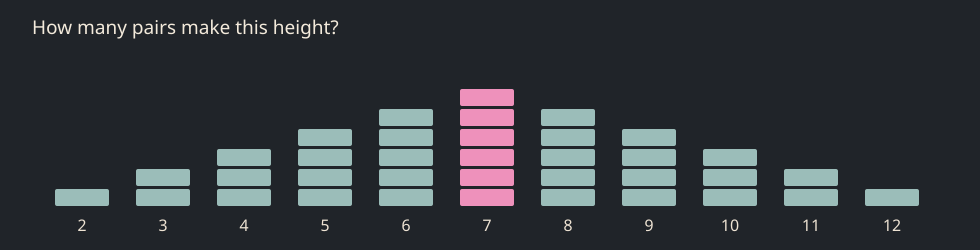

The same die can make a number, a height, a movement, or permission to continue. What changes when chance reaches a body?
I read the linked video’s automatic captions and checked the existing halls. The strongest next step is a small family of physical comparisons that grows out of the artifacts already there.
01 · Random_Cubes → Random_Gaussian
Two dice become a column
Throw into two trays. Keep both faces visible while their sum assembles a column. The same height can return by different combinations.
Extend the existing die; lead into the existing Galton board.
More ways to arrive at the middle.
02 · Random_Remove
A bag that can run out
Release numbered blocks from two hoppers. One returns every draw; the other retains an empty slot. Compare the two growing records.
The existing removal rule already draws without replacement.
What has happened changes what can happen.
03 · Random_Walk
A place remembers
Two carriages share a rail length and a clock. One chooses its next position afresh; the other takes a small step from where it stands. Try to anticipate each.
Build beside the terrarium; keep the visitor on a fixed floor.
An uncertain step can have a nearby destination.
04 · Random_Cubes / later Random_Game
The six asks for another throw
A six lets the chain continue. Each throw adds a labelled block to a column. Occasionally the ordinary rule makes an extraordinary height.
New rule; the current die’s reward rain does not do this.
The exception was permitted by the rule.
05 · Random_Game
When was the passage decided?
Compare three doors: a draw revealed before choice, a draw made after choice, and a preselected passage kept hidden. Walk the consequences.
Preserve the current hidden doors as one member of the comparison.
Finding out late is not necessarily being decided late.
06 · Random_Space_Geometry → Noise
Related weather
Large shutter openings follow independent targets, accumulated steps, or an explicit pink-noise approximation. Their timing and motor smoothing stay comparable.
Develop at the bridge into Noise; check the spectrum before using its name.
A world may be uncertain and still carry a history.

A model sketch for the first encounter, not a museum screenshot. Each block represents one ordered pair. Seven has six routes; two has one. The model assumes independent fair dice. It cannot certify the physical simulation’s throws.
Begin with the paired dice
Keep the fourteen-hall order. Add the pair beside the existing die, then let its column prepare the encounter with the Galton board and the Gaussian cabinet. Make the choice-timing doors the next addition. Carry the longer correlation study into Noise.
Two dice lie beside the column. One shows three, the other four. Seven blocks stand between you and the wall. Throw again. Five and two: the column comes back, though its ingredients have changed. How many different throws could bring you to the same height?
A possible opening for the new encounter. It has not been inserted into the book.
Keep the source visible
The current die and coin read physical orientation. The Galton board simulates falling beads. However, trng_vs_prng labels a side “physical entropy” while its named quantum and thermal inputs use generated numbers and trigonometric functions. That label needs correcting before the exhibit can serve as a physical-source example.
Three distinctions to preserve
Values: adding two independent dice changes the distribution. A sum of two dice is triangular, not Gaussian.
Memory: adding a new displacement to the previous position makes a walk. Small changes and rare large ones do not, by themselves, establish pink noise. The signal-processing definition concerns approximately 1/f power over a frequency range. Julius O. Smith’s treatment supplies the stricter definition.
Knowledge and timing: the current doors pick the safe passage before the visitor chooses. The new after-choice trial must actually draw later; simply hiding an earlier result would repeat the existing experiment.
Connection to the video
The relevant passage starts before the supplied timestamp: 8:18–8:42 concerns decision timing, 8:43–9:05 correlation, and 9:05–9:36 dice mechanisms. The video cites Engelstein’s GDC talk. Our encounters are proposed translations of those distinctions into museum space.